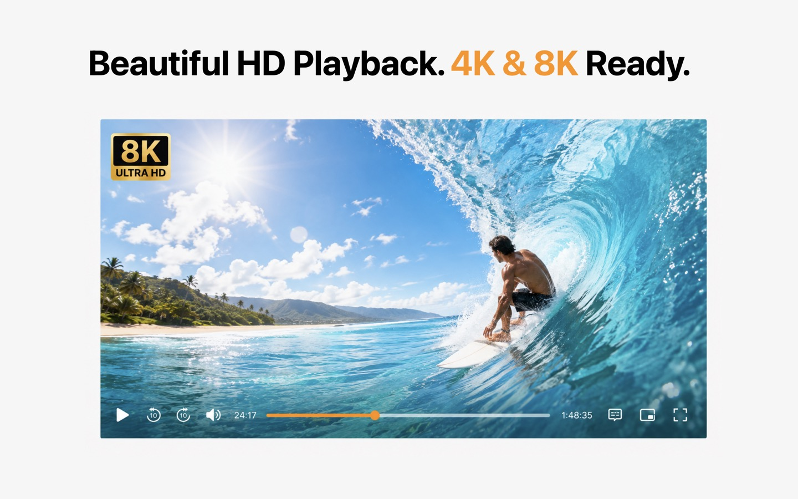
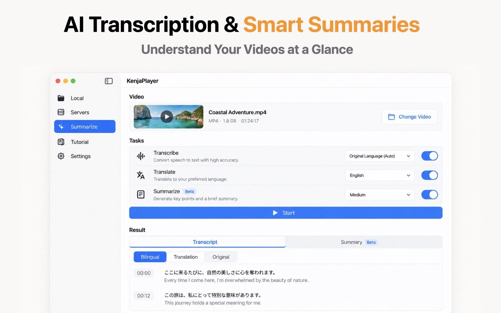
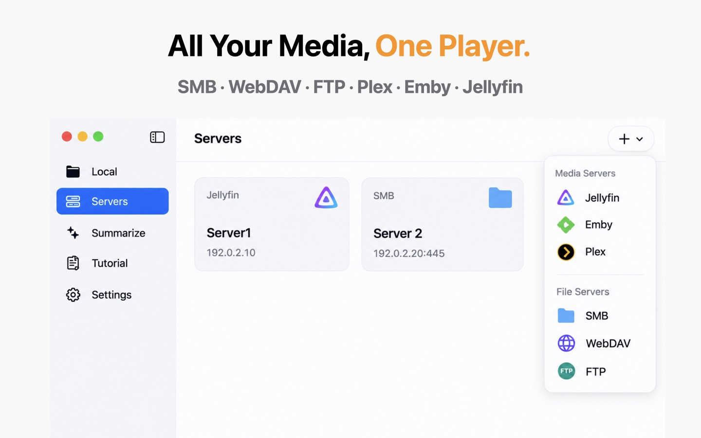

Real-time AI subtitles
Live transcription and bilingual translation while the video plays. 20+ languages recognized, 25+ translation targets — no waiting, no uploading.
EXPLORE SUBTITLES →KenjaPlayer transcribes and translates any video as you watch — 100% on-device. It plays every format up to 8K HDR, streams from Jellyfin, Plex, SMB and WebDAV, and turns two-hour videos into seconds of reading. No cloud. No accounts. No tracking.
IPHONE · IPAD · MAC · APPLE TV — free download, one-time PRO upgrade


Four things, done properly — with the AI running on your Apple silicon, not somebody else's server.
Live transcription and bilingual translation while the video plays. 20+ languages recognized, 25+ translation targets — no waiting, no uploading.
EXPLORE SUBTITLES →Turn a two-hour video into a readable summary with a clickable chapter timeline. Export the transcript as SRT or Markdown.
EXPLORE SUMMARIES →
MKV, RMVB, AVI, WMV, FLV, WebM and 100+ more — with hardware-accelerated 4K/8K, HDR and 10-bit decoding. Nothing to convert.
SEE SUPPORTED FORMATS →
Stream directly from Jellyfin, Plex, Emby, SMB, WebDAV and FTP. Direct connection only — credentials never leave your device.
EXPLORE MEDIA SERVERS →
「AIって、本当に人を幸せにできるの？」
Do you think AI can make people happier?
Every transcription, translation and summary runs on your device with Apple's on-device models. There is no server to send your videos to, no analytics SDK, no ad framework, no account. Media-server connections are direct — we never see your credentials, your library, or anything else.
Free download on the App Store for iPhone, iPad, Mac and Apple TV.
NO SUBSCRIPTION · NO ACCOUNT · NO TRACKING